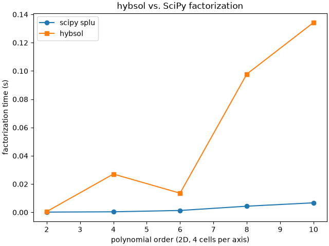

Note
Go to the end to download the full example code.
Sparse solvers for the direct continuity system.#
assemble_global_laplace() in the dense example scatters the element
operators through the transfer with np.add.at; the same
T_i * M[i, j] * T_j product emitted as COO triplets and summed into a
CSC matrix by fdg.scatter_csc() is a standard sparse
assembly. The example feeds the resulting
reduced system to three solvers – the dense numpy path of the existing
example (numpy.linalg.solve() on the dense scatter) as the reference,
scipy.sparse.linalg.splu() as the sparse reference, and
the hybsol block solver, which receives the unknowns partitioned by owner
(element-private unknowns in one block per element, shared unknowns in one
block per object) and factors the block structure unpivoted.
hybsol trades pivot freedom for block-dense arithmetic, so it can pay off when the blocks are large: at low polynomial order the blocks are 1x1 and SciPy wins, while higher orders grow the element blocks. The printed sweep reports assemble, factorize, and solve times per solver, the relative agreement of the solutions, and the block-size range that frames where hybsol breaks even.

case unknowns blocks bmax sp asm dn asm dense s scipy fac scipy s hyb fac hyb s spr rel hyb rel blocking
2D p=2 c=4 81 81 1 0.001 0.001 0.000 0.000 0.000 0.001 0.000 1.2e-15 1.5e-15 element/object
2D p=2 c=8 289 289 1 0.004 0.004 0.001 0.000 0.000 0.082 0.000 4.7e-15 9.9e-15 element/object
2D p=2 c=16 1089 1089 1 0.012 0.014 0.006 0.002 0.000 1.809 0.007 1.9e-14 1.3e-13 element/object
2D p=2 c=32 4225 4225 1 0.044 0.060 0.246 0.012 0.001 0.000 0.000 4.3e-14 nan skipped
2D p=4 c=4 289 81 9 0.004 0.003 0.002 0.000 0.000 0.027 0.000 7.3e-15 8.8e-15 element/object
2D p=4 c=8 1089 289 9 0.011 0.013 0.008 0.002 0.000 0.101 0.001 1.5e-14 3.6e-14 element/object
2D p=6 c=4 625 81 25 0.012 0.008 0.002 0.001 0.000 0.014 0.000 8.8e-15 1.1e-14 element/object
2D p=8 c=4 1089 81 49 0.045 0.033 0.007 0.004 0.000 0.098 0.000 2.3e-14 2.0e-14 element/object
2D p=10 c=4 1681 81 81 0.118 0.102 0.021 0.007 0.000 0.134 0.001 9.2e-14 1.7e-14 element/object
3D p=2 c=2 125 125 1 0.005 0.005 0.000 0.000 0.000 0.000 0.000 5.7e-16 9.5e-16 element/object
3D p=2 c=3 343 343 1 0.016 0.013 0.000 0.000 0.000 0.013 0.000 5.9e-15 2.5e-15 element/object
3D p=2 c=4 729 729 1 0.035 0.030 0.001 0.002 0.000 0.073 0.002 4.0e-15 4.7e-15 element/object
3D p=4 c=2 729 125 27 0.489 0.290 0.001 0.002 0.000 0.010 0.000 1.3e-14 3.0e-15 element/object
from __future__ import annotations
from time import perf_counter
from typing import Any
import matplotlib.pyplot as plt
import numpy as np
import numpy.typing as npt
import scipy.sparse as sp
import scipy.sparse.linalg as sparse_la
from hybsol import BlockSystem, SingularSystemError
try:
from examples.plot_multi_element_laplace_direct_continuity import (
assemble_global_laplace,
boundary_object_globals,
element_entries,
make_element_maps,
make_mesh,
manufactured_source,
object_row_count,
)
except ModuleNotFoundError:
if "__file__" not in globals():
# Sphinx-gallery executes the example without ``__file__``; the
# repository root is already on the path through the doc configuration.
raise
import sys
from pathlib import Path
sys.path.insert(0, str(Path(__file__).resolve().parents[1]))
from examples.plot_multi_element_laplace_direct_continuity import (
assemble_global_laplace,
boundary_object_globals,
element_entries,
make_element_maps,
make_mesh,
manufactured_source,
object_row_count,
)
from fdg import (
BasisSpecs,
BasisType,
DirectDofMap,
FunctionSpace,
KFormSpecs,
Mesh,
SpaceMap,
laplace_stiffness,
scatter_csc,
)
from fdg.integration import projection_l2_dual
# Sparse containers: coo/csc matrix vs array is unresolved in scipy's stubs.
SparseMatrix = Any
# Per solver: (factorize seconds, solve seconds); assembly is shared.
Timings = tuple[float, float]
def assemble_sparse_global_laplace(
transfer: DirectDofMap,
maps: list[SpaceMap],
element_specs: list[KFormSpecs],
base_space: FunctionSpace,
) -> tuple[SparseMatrix, npt.NDArray[np.double]]:
"""Scatter the element operators into a CSC matrix through the transfer.
Every element's stiffness lands as one row-major block of the flat array
:func:`fdg.scatter_csc` consumes; the transfer's
``value_r * M[i, j] * value_c`` triplets sum into the CSC entries.
"""
sizes = np.diff(transfer.element_offsets) ** 2
starts = np.concatenate(([0], np.cumsum(sizes)[:-1]))
local = np.empty(int(sizes.sum()))
rhs = np.zeros(transfer.global_dof_count)
for element_id, element_map in enumerate(maps):
local_dofs, global_dofs, values = element_entries(transfer, element_id)
stiffness = laplace_stiffness(
element_id, [element_specs[element_id]], element_map
)
load = projection_l2_dual(manufactured_source, base_space, element_map)
local[
int(starts[element_id]) : int(starts[element_id]) + int(sizes[element_id])
] = stiffness.reshape(-1)
np.add.at(rhs, global_dofs, values * load.values.flatten()[local_dofs])
matrix = scatter_csc(transfer, local)
return matrix, rhs
def prescribe_dirichlet(
matrix: SparseMatrix,
rhs: npt.NDArray[np.double],
boundary: npt.NDArray[np.intp],
data: npt.NDArray[np.double],
) -> tuple[npt.NDArray[np.intp], SparseMatrix, npt.NDArray[np.double]]:
"""Eliminate the prescribed boundary unknowns from the sparse system."""
free = np.setdiff1d(np.arange(matrix.shape[0], dtype=np.intp), boundary)
reduced = matrix[free][:, free].tocsc()
reduced_rhs = rhs[free] - np.asarray(matrix[free][:, boundary] @ data).reshape(-1)
return free, reduced, reduced_rhs
def block_owners(
transfer: DirectDofMap,
mesh: Mesh,
order: int,
cells: int,
) -> tuple[npt.NDArray[np.intp], npt.NDArray[np.intp]]:
"""Return the owning block and the block start of every global unknown.
Shared objects own one block each in the layout
:func:`boundary_object_globals` numbers; the element-private free modes
follow in one block per element.
"""
ndim = mesh.ndim
rows = [object_row_count(order, mdim) for mdim in range(ndim)]
counts = [(cells + 1) ** ndim] + [
len(mesh.collections[mdim - 1]) for mdim in range(1, ndim)
]
owners = np.full(transfer.global_dof_count, -1, dtype=np.intp)
starts: list[int] = []
base = 0
for mdim in range(ndim):
if rows[mdim] == 0:
# An empty window carries no unknowns and owns no block.
continue
for _ in range(counts[mdim]):
starts.append(base)
owners[base : base + rows[mdim]] = len(starts) - 1
base += rows[mdim]
# The interior offsets are absolute: the first private unknown per element.
interiors = np.asarray(transfer.element_interior_offsets, dtype=np.intp)
element_blocks = len(starts)
for element_id in range(interiors.size - 1):
starts.append(int(interiors[element_id]))
owners[interiors[element_id] : interiors[element_id + 1]] = (
element_blocks + element_id
)
if np.any(owners < 0):
raise RuntimeError("some global unknowns have no owning block")
return owners, np.asarray(starts, dtype=np.intp)
def _pack_block_system(
reduced: SparseMatrix,
block_of_entry_row: npt.NDArray[np.intp],
block_of_entry_col: npt.NDArray[np.intp],
position_of_entry_row: npt.NDArray[np.intp],
position_of_entry_col: npt.NDArray[np.intp],
sizes: npt.NDArray[np.intp],
) -> BlockSystem:
"""Sum the entries of every block pair into one dense block apiece."""
entries = reduced.tocoo()
pair = block_of_entry_row.astype(np.int64) * sizes.size + block_of_entry_col
pattern: dict[tuple[int, int], npt.NDArray[np.double]] = {}
for code in np.unique(pair):
row_block = int(code // sizes.size)
col_block = int(code % sizes.size)
selected = pair == code
block = np.zeros((int(sizes[row_block]), int(sizes[col_block])))
np.add.at(
block.reshape(-1),
position_of_entry_row[selected] * sizes[col_block]
+ position_of_entry_col[selected],
entries.data[selected],
)
pattern[(row_block, col_block)] = block
for block in range(sizes.size):
# Every row needs its diagonal block even when its entries cancel.
pattern.setdefault((block, block), np.zeros((int(sizes[block]),) * 2))
block_rows, block_cols, payload = [], [], []
for (row_block, col_block), block in sorted(pattern.items()):
block_rows.append(row_block)
block_cols.append(col_block)
payload.append(np.ascontiguousarray(block).reshape(-1))
return BlockSystem.from_blocks(
tuple(int(size) for size in sizes),
np.asarray(block_rows, dtype=np.intp),
np.asarray(block_cols, dtype=np.intp),
np.concatenate(payload),
)
def build_hybsol_system(
reduced: SparseMatrix,
owners: npt.NDArray[np.intp],
free: npt.NDArray[np.intp],
blocking: str,
) -> tuple[BlockSystem, npt.NDArray[np.intp]]:
"""Pack the reduced matrix into a hybsol system on the free unknowns.
``blocking`` is ``"element/object"`` for one block per owner or
``"scalar"`` for one 1x1 block per unknown. Returns the system and the
permutation taking block-ordered vectors back to the reduced order.
"""
if blocking == "element/object":
used, sizes = np.unique(owners[free], return_counts=True)
new_index = np.full(int(owners.max()) + 1, -1, dtype=np.intp)
new_index[used] = np.arange(used.size)
row_block = new_index[owners[free]]
else:
sizes = np.ones(free.size, dtype=np.intp)
row_block = np.arange(free.size, dtype=np.intp)
new_starts = np.concatenate(([0], np.cumsum(sizes)))[:-1].astype(np.intp)
# Blocks own contiguous global ranges, so sorted order gives positions.
order = np.argsort(row_block, kind="stable")
positions = np.empty(free.size, dtype=np.intp)
positions[order] = np.arange(free.size, dtype=np.intp) - new_starts[row_block[order]]
entries = reduced.tocoo()
system = _pack_block_system(
reduced,
row_block[entries.row],
row_block[entries.col],
positions[entries.row],
positions[entries.col],
sizes,
)
return system, order
def solve_hybsol_reduced(
reduced: SparseMatrix,
reduced_rhs: npt.NDArray[np.double],
owners: npt.NDArray[np.intp],
free: npt.NDArray[np.intp],
) -> tuple[npt.NDArray[np.double], str, Timings]:
"""Factor and solve the reduced system with hybsol.
Tries the element/object blocking first; a structurally invalid pack or
:class:`SingularSystemError` falls back to one 1x1 block per unknown.
Returns the solution in reduced order, the blocking that worked, and
factorize/solve timings.
"""
for blocking in ("element/object", "scalar"):
system, order = build_hybsol_system(reduced, owners, free, blocking)
if blocking != "scalar" and not system.is_valid():
# A missing mirror means the blocks did not come out contiguous.
continue
try:
started = perf_counter()
decomposition = system.decompose()
factor_elapsed = perf_counter() - started
except SingularSystemError:
continue
started = perf_counter()
block_ordered = decomposition.solve(reduced_rhs[order])
solve_elapsed = perf_counter() - started
unpermute = np.empty_like(order)
unpermute[order] = np.arange(order.size)
return block_ordered[unpermute], blocking, (factor_elapsed, solve_elapsed)
raise RuntimeError("no hybsol blocking could be packed")
def solve_case(
ndim: int, order: int, cells: int, *, run_hybsol: bool = True
) -> dict[str, object]:
"""Assemble once and solve with dense, SciPy, and hybsol; report timings."""
mesh = make_mesh(ndim, cells)
maps = make_element_maps(ndim, order + 4, cells)
base_space = FunctionSpace(
*(BasisSpecs(BasisType.LAGRANGE_GAUSS_LOBATTO, order) for _ in range(ndim))
)
element_specs = [KFormSpecs(0, base_space) for _ in maps]
transfer = mesh.compute_kform_direct_dof_map(element_specs)
started = perf_counter()
matrix, rhs = assemble_sparse_global_laplace(
transfer, maps, element_specs, base_space
)
sparse_elapsed = perf_counter() - started
started = perf_counter()
dense_matrix, dense_rhs = assemble_global_laplace(
transfer, maps, element_specs, base_space
)
dense_assemble_elapsed = perf_counter() - started
boundary, data = boundary_object_globals(transfer, mesh, maps, order, cells)
free, reduced, reduced_rhs = prescribe_dirichlet(matrix, rhs, boundary, data)
dense_free_partition, dense_reduced, dense_reduced_rhs = prescribe_dirichlet(
sp.csc_array(dense_matrix), dense_rhs, boundary, data
)
assert np.array_equal(free, dense_free_partition)
# The dense reference is the existing example's path: numpy on the dense scatter.
started = perf_counter()
dense_free = np.linalg.solve(dense_reduced.toarray(), dense_reduced_rhs)
dense_solve = perf_counter() - started
started = perf_counter()
sparse_lu = sparse_la.splu(reduced)
sparse_factor = perf_counter() - started
started = perf_counter()
sparse_free = sparse_lu.solve(reduced_rhs)
sparse_solve = perf_counter() - started
owners, starts = block_owners(transfer, mesh, order, cells)
# At p=2 every block degenerates to 1x1 and hybsol's unpivoted block LU
# scales like a slow scalar factorization; skip it past the measured budget.
if run_hybsol:
hybsol_free, blocking, (hybsol_factor, hybsol_solve) = solve_hybsol_reduced(
reduced, reduced_rhs, owners, free
)
else:
hybsol_free, blocking, hybsol_factor, hybsol_solve = None, "skipped", 0.0, 0.0
scale = float(np.max(np.abs(dense_free)))
sizes = np.diff(np.append(starts, transfer.global_dof_count))
return {
"case": f"{ndim}D p={order} c={cells}",
"unknowns": transfer.global_dof_count,
"blocks": int(owners.max()) + 1,
"block_max": int(sizes.max()),
"assemble": sparse_elapsed,
"dense_assemble": dense_assemble_elapsed,
"dense": dense_solve,
"scipy": (sparse_factor, sparse_solve),
"hybsol": (hybsol_factor, hybsol_solve),
"blocking": blocking,
"sparse_agreement": float(np.max(np.abs(sparse_free - dense_free))) / scale,
"hybsol_agreement": (
float(np.max(np.abs(hybsol_free - sparse_free))) / scale
if hybsol_free is not None
else float("nan")
),
}
def _print_row(row: dict[str, object]) -> None:
"""Print one sweep row."""
assert isinstance(row["scipy"], tuple) and isinstance(row["hybsol"], tuple)
scipy_t, hybsol_t = row["scipy"], row["hybsol"]
print(
f"{row['case']:>13} {row['unknowns']:>9} {row['blocks']:>7} "
f"{row['block_max']:>5} {row['assemble']:>8.3f} {row['dense_assemble']:>8.3f} "
f"{row['dense']:>8.3f} "
f"{scipy_t[0]:>8.3f} {scipy_t[1]:>7.3f} "
f"{hybsol_t[0]:>8.3f} {hybsol_t[1]:>7.3f} "
f"{row['sparse_agreement']:>8.1e} {row['hybsol_agreement']:>8.1e} "
f"{row['blocking']}",
flush=True,
)
def main() -> None:
"""Run the size and order sweep and print the comparison table."""
print(
f"{'case':>13} {'unknowns':>9} {'blocks':>7} {'bmax':>5} {'sp asm':>8} "
f"{'dn asm':>8} {'dense s':>8} {'scipy fac':>8} {'scipy s':>7} "
f"{'hyb fac':>8} {'hyb s':>7} {'spr rel':>8} {'hyb rel':>8} blocking",
flush=True,
)
cases = (
[(2, 2, cells) for cells in (4, 8, 16, 32)]
+ [
(2, order, cells)
for order in (4, 6, 8)
for cells in ((4, 8) if order == 4 else (4,))
]
+ [(2, 10, 4)]
+ [(3, 2, cells) for cells in (2, 3, 4)]
+ [(3, 4, 2)]
)
rows = [
solve_case(ndim, order, cells, run_hybsol=(ndim, order, cells) != (2, 2, 32))
for ndim, order, cells in cases
]
for row in rows:
_print_row(row)
_plot_crossover(rows)
def _plot_crossover(rows: list[dict[str, object]]) -> None:
"""Plot measured factorization times of the 2D order sweep."""
sweep = [
row
for row in rows
if str(row["case"]).startswith("2D")
and str(row["case"]).endswith("c=4")
and row["blocking"] != "skipped"
]
orders = [int(str(row["case"]).split("p=")[1].split()[0]) for row in sweep]
factor_scipy = []
factor_hybsol = []
for row in sweep:
assert isinstance(row["scipy"], tuple) and isinstance(row["hybsol"], tuple)
factor_scipy.append(row["scipy"][0])
factor_hybsol.append(row["hybsol"][0])
figure, axis = plt.subplots(layout="constrained")
axis.plot(orders, factor_scipy, "o-", label="scipy splu")
axis.plot(orders, factor_hybsol, "s-", label="hybsol")
axis.set_xlabel("polynomial order (2D, 4 cells per axis)")
axis.set_ylabel("factorization time (s)")
axis.set_title("hybsol vs. SciPy factorization")
axis.legend()
plt.show()
if __name__ == "__main__":
main()
Total running time of the script: (0 minutes 5.343 seconds)